Algorithm Design and Theoretical Basis Description
Technical Note D2
Executive summary
Summary goes here.
Theoretical basis
Kind of lit review I suppose? Probably could be adapted stuff we have in the proposal.
This report describes in detail the data, the data preprocessing, as well as model selection, training and validation schemes. The background section positions the research in the literature and identifies the drawbacks of current approaches, this study aims to address. It also provides some background on the study area - Central Europe. The data section describes the input, output and target data for the model. The methodology section focuses on the model selection, training and validation approaches.
Morphometric Classification Homogenisation
The spatial layout of the physical elements of cities - its urban fabric - affects most activities their residents undertake, from accessing services or jobs to their social and cultural lives. Analysing the interplay of urban form, land use, mobility and other dimensions of human activities provides insights into how cities evolve and what effective developmental policies should look like. Researchers in the field of urban morphology have spend years in identifying, classifying and analysing the variations in urban form across cities from all over the world. A core new development, powered by advancements in spatial data science, computer vision, and open data availability, are the methodologies created to computationally discern and analyse urban fabric (Fleischmann et al. 2022). Taken together, these facts have opened up the possibility of a more systematic and comprehensive approach to the classification of urban morphological patterns, which in turn can drive our understanding of cities (Calafiore et al. 2023; Arribas-Bel and Fleischmann 2022).
One factor that limits the wider application of these methods is their dependency on high-quality data, that is generally not available for every city. For example, (Fleischmann et al. 2022; Arribas-Bel and Fleischmann 2022) use building polygons from the respective municipal and national mapping agencies. However, such data is not generally available even for most high-income countries. And where available, it can come in various formats and the data itself is not necessarily homogenous, which makes its processing difficult. For example, official Czechia cadastral building polygons (https://services.cuzk.cz/) come as a GeoPackage, with no information about building age, height, type or use. In contrast, official German building polygons, come separately for every state , typically but not always as GML data from a WFS service, and sometimes have extra building information. However, the definition of building is different to Czechia and the polygon set may include parts of tunnels, overpasses or tram lines. These definitions are even sometimes different in the cases of cities within the same country - i.e. the data for Berlin and Hamburg is different from the data available for Bremen.
EuroFab aims to address the data availability and processing issues, as well as broaden the applicability of urban morphometrics. It does this through the development of a predictive urban morphometric model which uses widely available building footprints to infer structure of urban form. The model input is calculated directly on satellite-derived building footprints, which gives it a global scope and thus eliminates the need the data fusion problems described above. Furthermore, it is trained on a detailed morphometric classification derived from official cadastre data in a large study area that covers multiple countries - Poland, Austria, Czechia, Germany and Slovakia, i.e. Central Europe. The heterogeneity of urban form and planning regimes present in the study area enables the model to distinguish a rich variety of urban patterns and improves it generalisability.
The specific approach taken has four stages. In the first stage morphological elements and their characteristics are calculated using the widely available Microsoft building and Overture Maps Transportation data. These elements are the predictor variables that the model will use. To achieve this we develop a highly-scalable polygon and street data pipeline, capable of calculating an exhaustive list of morphometric characteristics. In the second stage, each element, calculated in the first stage, is assigned a target classification label based on spatial overlap with morphological elements from (primus?). (primus?) is a classification of urban fabrics in Central Europe based on the highest-detail available cadastre data. Third, the data is then split into training and testing subsets based on spatial contiguity, in order to account for spatial leakage. Lastly, a series of non-linear models is trained to predict the morphological classification of individual elements, using a custom validation schema. This is required in order to emphasise the model’s ability to deal with previously unseen data and new urban fabric types in the evaluation. The best performing model is chosen as the final production model, and retrained on the whole dataset.
Satellite derived building footprints are becoming more widely adopted, however, the data does not come without issues. For example, in dense urban centres entire blocks can be delineated as individual buildings. Given that morphology calculations rely on precise local topological relations between neighbours, such as two buildings touching, this problem renders a whole number of possible measurements described in (Fleischmann, Romice, and Porta 2021) meaningless. Furthermore, this issue affects even simpler calculations such as counting the number of buildings within a radius or topological neighbourhood. Other issues are that computer vision techniques sometimes miss entire buildings or misidentify building boundaries. Therefore, any approach that uses satellite-derived building footprints should be able to account for these three and potentially other problems.
Implementing these stages, and further realising the potential of the model for global application, requires the creation of novel, scalable data processing pipelines capable of analysing hundreds of millions of morphological elements - buildings, streets and their derivatives. Due to their scalability, these pipelines can further be reused for other work, outside of the immediate scope of this projects. To ensure maximum impact and high standards, all work for this project follows open science principles and is open-sourced on GitHub.
AI Modelling using Satellite Imagery
A brief theoretical background.
Algorithm Design
Morphometric Classification Homogenisation
Model architecture
The model architecture consists of the two main components: 1) derivation of predictive variables, and 2) development of the predictive model. Given the target of the prediction is morphological classification, we use morphometric measurements based on the sub-standard satellite-derived data as predictive variables, as they are conceptually related - the original target classification is a result of unsupervised learning on top of morphometric measurements based on cadastral data. The model’s main job is then to capture the shift of meaning of individual characters from the original, when measured on precise geometries, to the derived one, measured on imperfect representation of urban form. Given the model will eventually perform a prediction out of the sample, we further build in a logic identifying the types of urban form it has not seen previously and ingesting then manually in the original taxonomy, forming an iterative feedback loop. The whole system is illustrated in a Figure XXX (TODO).
TODO: ADD A DIAGRAM OF THE WHOLE THING, INCLUDING THE FEEDBACK LOOP.
The data preparation and model training consists of four stages. The first and second stages cover the morphometric characterisation, which acts as the model’s predictor variables, and the target variables generation. The third stage randomly splits the whole study area into model training and testing data taking into account spatial contiguity. The final stage is the model training and evaluation, based on a framework in which we empahsize the ability to flag unseen urban fabric types in five different scenarios. The full model training and evaluation framework will be implemented using scikit-learn pipelines.
Data preprocessing
Building preprocessing
All available Microsoft building footprints for the study area are used for the analysis. Typically, building polygons required for morphological studies have to be of very high quality. For example, building polygons overlapping by a thousandth of a millimetre break topological contiguity and therefore affect the calculation of morphological properties, such as the ratio of shared walls, or the number of adjacent buildings. Furthermore, even the highest quality available software suffers from numerical precision issues which exasperate the above problem. Another potential issue is the inclusion of artefacts we are not directly interested in such as sheds or market stalls. Most importantly, polygons shall represent individual buildings, not compounds of buildings that are adjacent. The footprints used for this study fall short of these standards. Therefore, our approach aims to accommodate less than ideal data and methods, first by processing the building data, and second, by adapting the morphological calculations to account for numerical issues.
TODO: ADD A FIGURE SHOWING MS BUILDINGS NEXT TO CADASTRE TO PROVIDE A VISUAL CUE
Before dealing with any morphological assessment, the polygons need to undergo basic topological preprocessing.
The first step in the building data processing is to split up multi-polygons and make the geometries valid. The second step, is to simplify the polygons in order to accurately represent the corners of buildings and other shape related characteristics. Next, to filter out any buildings that have an area larger than 200,000 sq.m. This is done since some artefacts such as construction sites, mines or tunnels might be included in the data as buildings. The next step is to merge overlapping buildings that either: overlap for at least 10 percent of their areas, or one of them has less than 50 sq.m. in total area. This is done to merge buildings and building parts, since cadastre definitions of these two polygon types are inconsistent and sometimes buildings are assigned as building parts or vice versa. This step merges the buildings and its parts into one polygon. Finally, the preprocessing pipeline snaps nearby buildings together and fills gaps in the polygons that are less than 10 square cm. These two steps aim to address some common topological issues, such as missing slivers with almost zero areas between multiple or inside individual building polygons. Nevertheless, even after the preprocessing numerous topological issues remain and therefore we take this into account in subsequent analysis steps.
Overture Streets
The street network is a direct download from Overture Maps Transportation theme, a processed subset of data from OpenStreetMap, which has global coverage and high quality data. Since the dataset includes multiple segments types, including footpaths, the types of segments used in the analysis are limited to … . Another type of segment that is filtered out are tunnels - the analysis strictly focuses on two dimensions and therefore undergrounds structures adversely affect the calculation of boundaries and characters.
The second major stage of the street processing is the simplification of the entire street network for each subregion. The actual physical layout of the street is not important to the study - the number of lanes for example, or the exact structure of roundabouts. Rather, the focus is on the topological properties of the street network such as connections, as well as general physical characteristics such as lengths and widths. Therefore the overture street network is further processed by eliminating false nodes, combining lanes and simplifying roundabouts.
TODO: INCLUDE VISUAL REPRESENTATION OF INPUT AND SIMPLIFIED STREETS
Morphometric characterisation
The morphometric characterisation is directly derived from the method of (primus?) as closely as possible to ensure that we minimise the conceptual differences between the methodological backbone using the derivation of the target classification and the the data used within our model.
Subregions split
Since the study area of interest is large and contains tens of millions of buildings, it is divided into subregions to carry out all computation. The separation is done based on distances between buildings - buildings are split into subregions such that the building from one region and its closest neighbour (another building) from another region are at least 400 meters apart. This custom separation, rather than official administrative divisions, ensures that all elements that may affect morphological calculations are in the same set (subregion) and not split across political boundaries. All processing and character calculations are done for each region independently and in parallel.
TODO: ADD A FIGURE OF REGIONS
Elements and units
There are five morphological elements used for the morphometric characterisation - two base ones - buildings and streets and three derived ones - enclosures, nodes, enclosed tessellation cells (ETC). Buildings and streets are the two elements from which all other units are derived. The core unit of analysis in the study is the enclosed tessellation cell, which breaks down the whole study area into small-scale units, which when taken together fully cover the area.
Nodes
The first type of derived element in the study are street nodes, which are defined as the intersection points between different streets. They are used to calculate characteristics of the street network that capture relationships between streets such as number of intersections, as well as relationships between neighbouring enclosures and ETCs.
TODO: ADD A FIGURE OF NODES
Enclosures
Enclosures capture the characteristics of plots of land that contain from none to (usually) multiple buildings. They are operationalised as land delineations, surrounded by streets and other physical barriers, which can vary in size depending on the geographic context. If an area is in the city centre, each enclosure would approximate a single block and multiple building units, however if it was in an industrial area it would potentially encompass a single, or very few large buildings. In this study, only the street network is used for barriers to minimise the data dependency. Furthermore, enclosures are used to delineate the boundaries of enclosed tessellation cells to the surrounding streets - i.e. representing physical barriers.
In this study, enclosure delineation is further modified by introducing a variable, individual bandwidth for every building, as opposed to the global one used by (Fleischmann et al. 2022) or none using in generic enclosure delineation. This is done to limit the boundaries effects around the edges of cities and towns - i.e. cells on the edges of cities in (Fleischmann et al. 2022) are always large because there are no surrounding buildings and their cells resemble those of large buildings with lots of empty space around them. The limits used here are calculated through a Gabriel graph-based filtration of the subregion, which takes into account the surrounding neighbours structure around every ETC. For example, in row housing the buffer will be relatively small, in single family housing estates the buffer will be larger, and in industrial areas larger still; regardless of whether or not these buildings are in the middle of cities or around their edges. The detailed technical implementation is out of scope of this Technical Note.
TODO: ADD A FIGURE OF ENCLOSURES
Enclosed Tessellation Cells
Enclosed Tessellation Cells are the core unit used for the analysis and the one used to combine aspects of all of the other four elements. To operationalise it, the study follows the definition by (Fleischmann et al. 2022) - “the portion of space that results from growing a morphological tessellation within an enclosure delineated by a series of natural or built barriers identified from the literature on urban form, function and perception”, where the morphological tessellation is a delineation of the space based on Voronoi polygons centred around buildings. The boundaries of ETCs also represent the closest area of land to each building, than to any other building within an enclosure. Because of this feature, ETCs intersect with all other elements and are the unit that links together the characteristics of the four other elements. In some cases, if there are no buildings within the enclosure the whole enclosure is treated as an ‘empty’ tessellation cell.
TODO: ADD A FIGURE OF ETC
Morphometric Characters
Characteristics describing the interactions of these elements, and the elements themselves are calculated at three scales: small - covering only aspects of the element; medium - covering aspects of the element and neighbouring elements and large - covering neighbouring elements up to five topological neighbours. In total there are 63 (TODO: CHECK) morphometric characters calculated described in Table XXX, which come directly from the list of characters used to derive the target classification.
TODO: INCLUDE A TABLE OF CHARACTERS
Target labels
For the second stage, we assign a target classification label to every ETC derived using the satellite-derived polygons. This is done based on spatial intersection between EuroFab and (primus?) ETCs. In cases where there are multiple detailed tessellation cells that fall within the range of a single EuroFab ETC, the label is decided based on majority.
Since the final output of (primus?) is a hierarchy, rather than a flat clustering there are several options how to pick the specific target labels. Generally, clusters lower in the hierarchy represent classifications of urban fabrics at more granular scales. For example, depending on the hierarchy cutoff point historical urban areas can be one cluster, or can be separated into two - medieval and industrial-era urban fabrics.
The specific selection of cutoff points will follow (primus?). The first set of urban fabrics we will aim to predict, broadly differentiates - different types of houses; from heterogenous historical urbanised areas; from recent modern urban developments - apartment blocks and industrial areas. The second set breaks down each of the first sets into multiple subsets. It goes into more detail and splits the houses into more classes, based on features such as size and proximity to cities; it also splits the historical areas based on origin - medieval, industrial-era and others; and splits the modern urban developments into subclasses such as modernist apartment blocks, industrial areas, offices and others. By analysing the model performance across two different hierarchical levels, we will understand what is the highest resolution detail the model can predict, given the shortcomings of the data and which factors affect predictions.
TODO: FIGURE OF CLASSIFICATION IN AT LEAST TWO HIGH-LEVEL CUTS
Train/test/validation split
After assigning the target labels, we create a schema that will dictate how to split the data into a training and testing subsets for the classification models. Random subsetting does not work for this study, since we need to account for spatial dependency and the related data leakage between train and test data. The spatial leakage comes from both the nature of the data - spatial contiguity is one of the core aspects of morphological elements - but also from the way characters are calculated based on various nearest topological neighbours.
To account for this, we aggregate nearby ETCs into higher granularity spatial units - level 5 H3 cells - and randomly split the these units into 80% train and 20% test data, based on contiguity. This ensures that the majority of the test set ETCs and their neighbours are not present in the training data and no morphological characters related to them affect the training set. We use level 5 H3 cells, which represent a delineation of the globe into hexagons with approximately 250 sq. km. area, rather than enclosures or ETC contiguity, to ensure that contiguous subsets of test data cover areas of heterogenous elements and present the model with a realistic validation scenario. This process is done once for the whole study area, before training any models.
TODO: FIGURE OF TRAIN/TEST SPLIT BASED ON H3 ON A SINGLE CITY. IDEALLY MAPPED TO ETCS
Training and validation
The main aim of the modelling task is to generate a classification of morphological elements of similar quality to (primus?) given the data quality limitations, albeit flat, not hierarchical. To achieve this we create an evaluation framework for the selection of non-linear tree-based models like a random forest classifier or an XGBoost model. We use the satellite-derived ETCs and their characteristics as input data and the clusters from (primus?) as target labels for a classification task. The choice of tree-based learning models is due to their readily available implementations, high scalability and ability to quickly offer interpretation insights. Furthermore, they handle well high dimensional data, non-linear interactions and require minimal hyper-parameter tuning. The flexibility of the models and the specific training/testing framework setup will allow us to not just produce a predictive model but also to identify potential areas for improvement in the original data preprocessing.
Since we want the final production model to be general and applicable to large areas i.e. whole continents, it needs to be able to handle previously unseen urban fabric types. For example, an urban morphology type that is present in the test data, or in another study area, might not be present in the training data and in that case the model should flag its predicted label as uncertain. This is another area where tree models have an advantage, since they are ensemble methods and this can help reduces their tendency to overfit. They also readily provide a confidence score for each prediction which can be used to flag unseen data. Furthermore, we take extra care to evaluate the final production models performance in realistic scenarios and the relationship between its accuracy on test data and whole countries that are not part of the model training or test data.
To achieve this we train five iterations of each model on different subsets of the study area - so that that every country and every combination of countries is used as final hold-out validation data a and train/test pipeline respectively. For example, one iteration will use Germany, Poland, Czechia and Austria as part of its train/test pipeline, whereas Slovakia will be used as the hold-out data , in order to see the relationship between the final test score from the train/test pipeline and the models realistic performance on a whole unseen country’s urban fabric. The data from the four countries in each train/test pipeline will be separated into training and test sets based on the spatial strategy described previously. The model training and evaluation will follow standard best practices - model coefficients and hyper parameter tuning, such as the decision threshold will be optimised based on the training subset, and the test subset will be used to give a final model accuracy score. Specifically, the models will use balanced accuracy as the optimisation metric in order to account for imbalances in the distribution of urban fabric classes. Our framework further extends the best practices with an additional layer of testing using the hold-out country for each train/test pipeline. All of the data in the hold-out country is used to score the model’s performance and the spatial train/test split will be ignored for that particular iteration.
TODO: DIAGRAM SHOWING THE EVAL SETUP
This acts as an extra check against overfitting and ultimately enable us to see how the final production model will perform in realistic scenarios - applying it to whole countries which are not used for the training or testing at all. This comes with at least two advantages over simply reporting a test score on a random sample. First, it is a test of model performance on a dataset that does not have any spatial leakage with the training or testing data. Second, it ensures that we evaluate model performance on unseen urban fabric types from other countries. We can afford to do this in part due to the large size of the data we are working with. In every permutation there will be a rich variety of urban fabrics and tens of millions of ETCs used in the training part of each train/test pipeline.
The final production model is trained on the whole dataset, using the same hyper parameter grid search configuration and training/test spatial split. The extra validation steps we carry out with the hold-out countries will be used to used in three ways. First, to contextualise the final models’ accuracy on the test data; second, to indicate how the model will perform on other countries; and third to see how it handles urban fabric types not seen in the training or test data in a realistic scenario.
Preliminary results
There are 56,845,150 Microsoft building footprints for our study area, which are split into 474 subregions. This is significantly less than the available cadastre data, which has around 88 million buildings and are separated into 828 regions TODO: EXPLAIN WHY. The number of downloaded, unprocessed streets is similar to those in (primus?) - 23,332,865 - since they cover the same study area and come from the same source - Overture Maps, which is a processed subset of OpenStreepMap. However, the number of tessellation cells is the same as the buildings and therefore less than the cadastre data-based classification. Furthermore, the street simplification algorithm is affected by the available buildings, and therefore in turn also affects the tessellation cell boundaries. These results highlight the effect of the satellite derived building footprints that have been discussed in the Technical Note D3 - the missing or wrongly merged building polygons. In turn these affect the third discussed issue - the interpretation of the values of the calculated morphological characters. Many characters from the original classification also completely lose their meaning. For example, the number of adjacent buildings in the EuroFab dataset is much smaller and therefore all characters based on adjacency have a much more limited utility. This also affects, to a relatively smaller, but nevertheless important extent, characters that rely on inter-building distances and counts.
These results further point towards the need for a non-linear classification model, cable of accounting for these data discrepancies.
AI Modelling using Satellite Imagery
Most of the stuff from technical_part_turing.qmd except the data description.
Data preprocessing
For our analysis, we use two datasets of image tiles at different scales: larger tiles (224 x 224 pixels, covering 2240 x 2240 meters) for segmentation tasks, and smaller tiles (56 x 56 pixels, covering 560 x 560 meters) for classification tasks. The segmentation dataset includes 26,753 tiles (21,402 for training and 5,351 for testing), while the classification dataset consists of 403,722 tiles (342,648 for training and 61,074 for testing). For consistent sampling and comparison, we only use tiles that fully overlap with the spatial signatures, ensuring that each tile aligns with the urban form and function typology in our labeling framework. This alignment supports robust comparison of classification and segmentation outcomes on a pixel-level.
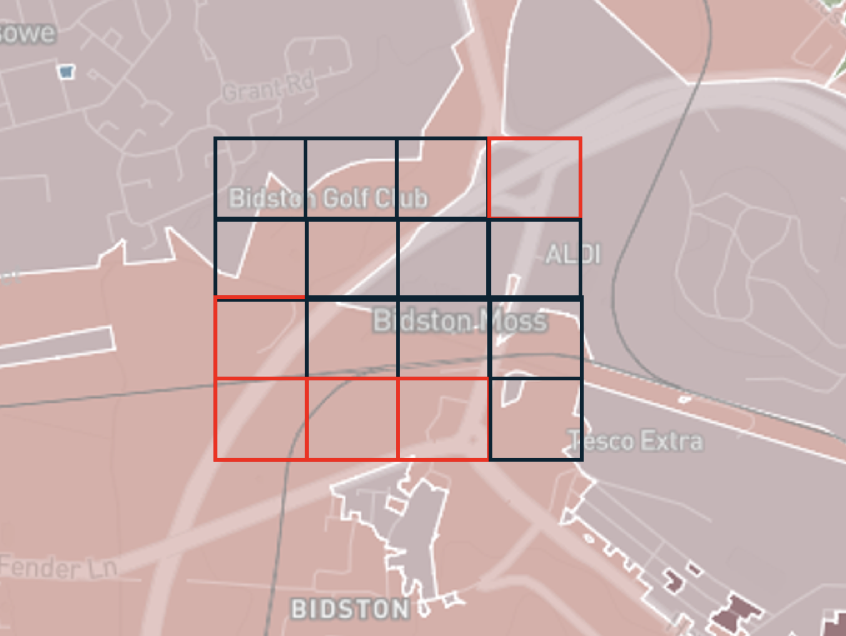
A significant challenge in our dataset is class imbalance, where certain urban fabric types are substantially more represented than others. This imbalance influenced our decisions regarding model architecture and loss function selection, leading us to explore specialized approaches for handling uneven class distributions.
Train/test split
We split the dataset into 80% train and 20% test data. The test datasets for segmentation and classification overlap.
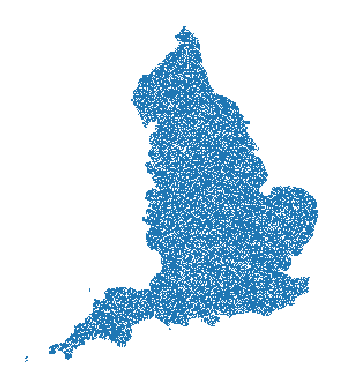 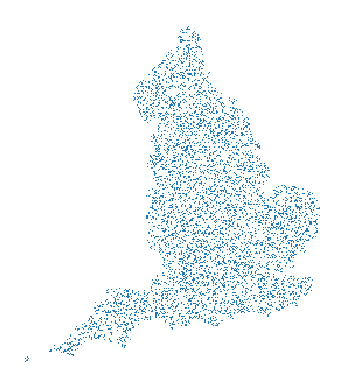
Unbalanced dataset
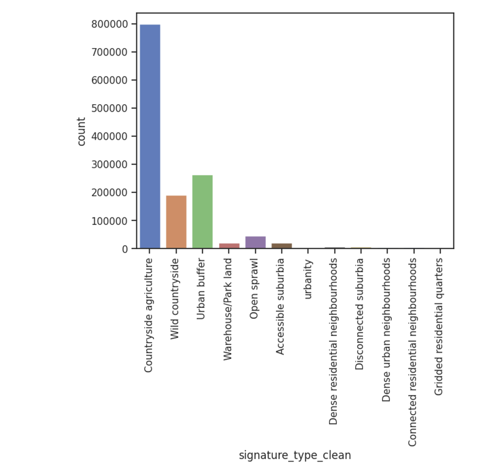
Model architectures
As part of the AI model design, we tested three main experiments to analyze urban fabric classification and segmentation. First, we conduct a baseline experiment using image embeddings from the SatlasPretrain model 1, which we fit to an XGBoost classifier to predict urban fabric classes (Approach A). Second, we fine-tune three different geospatial foundation models—SatlasPretrain, Clay, and IBM/NASA’s Prithvi model—to perform segmentation tasks (Approach B). Third, we take the best-performing geospatial foundation model from the segmentation experiments (Clay) and fine-tune it specifically for a classification task (Approach C). To evaluate and compare the results, we report weighted pixel-level accuracy, F1 score, and Intersection over Union (IoU) metrics across the experiments.
- Approach A: Image embeddings + XGBoost model
- Approach B: Fine-tuned geospatial foundation model (segmentation)
- Approach C: Fine-tuned geospatial foundation model (classification)
Baseline approach (Approach A)
The tiles are fed into the geospatial foundation model SatlasPretrain 2 that has been pretrained with more than 302 million labels on a range of remote sensing and computer vision tasks.
The model operates in two main steps:
- Foundation Model: A vision transformer model with a feature pyramid network (FPN) and a pooling layer is used to derive image embeddings—lower-dimensional representations of the images (Fig. 2).
- Machine Learning Classifier: The image embeddings are then input into an XGBoost classifier to predict urban fabric classes across England.
Our baseline model achieved a moderate prediction accuracy of approximately 61% with varying accuracy across the various spatial signature classes as seen in the figure below.
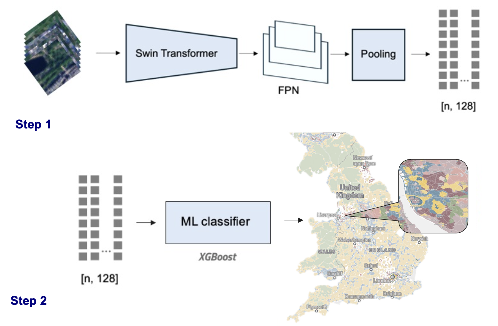
Results across spatial signatures
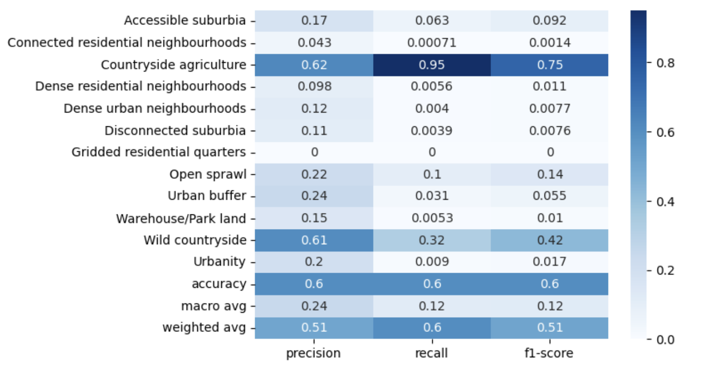
Baseline approach (ordinal)
In addition to the general classification task, we explored an ordinal regression task to account for the continuous nature of the spatial signatures, which are not strictly categorical. We applied the following ordinal mapping:
ordinal_mapping = { 'Wild countryside': 0, 'Countryside agriculture': 1, 'Urban buffer': 2, 'Open sprawl': 3, 'Disconnected suburbia': 4, 'Accessible suburbia': 5, 'Warehouse/Park land': 6, 'Gridded residential quarters': 7, 'Connected residential neighbourhoods': 8, 'Dense residential neighbourhoods': 9, 'Dense urban neighbourhoods': 10, 'Urbanity': 11, }
This ordinal approach produced a Mean Absolute Error (MAE) and Mean Squared Error (MSE) of 0.28, along with an R² score of 0.62. The Sankey diagram below highlights the primary misclassifications, which tend to occur between similar classes.
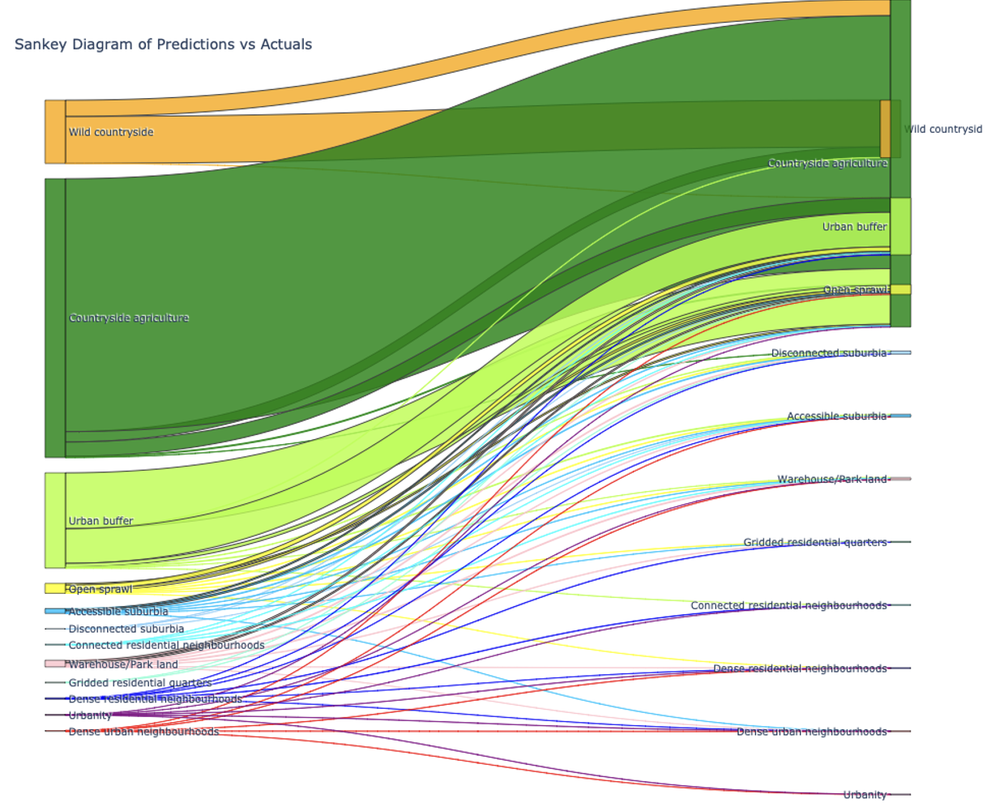
Baseline approach + spatial context
To enhance model performance, we incorporated spatial context, enabling the model to account for regional location. We included H3 Level 5 hexagon identifiers as a categorical variable, where each hexagon (approximately 560x560 meters) encompasses around 80 tiles.
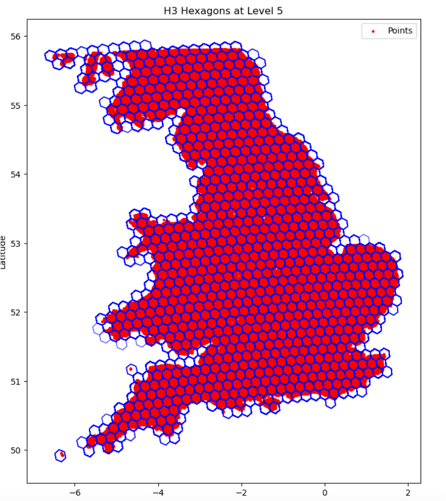
Segmentation (Approach B)
In Approach B, we fine-tuned a state-of-the-art geospatial foundation model for a segmentation task. We used the 224x224x3 image tiles as input. We evaluated three state-of-the-art foundation models, each with unique characteristics as listed below:
| Model | Architecture | Dataset Size | Image Sources |
|---|---|---|---|
| Satlas [^1] | SwinT | 302M labels | Sentinel-2 |
| Clay 3 | MAE/ViT | 70M labels | Multiple+ |
| Prithvi 4 | MAE/ViT | 250 PB | Sentinel-2/Landsat |
+Multiple sources include Sentinel-2, Landsat, NAIP, and LINZ
The following visualisations show the varying model configurations for the three different approaches tested for the segmentation task. The main difference is the varying backbone.
Model A: Satlas
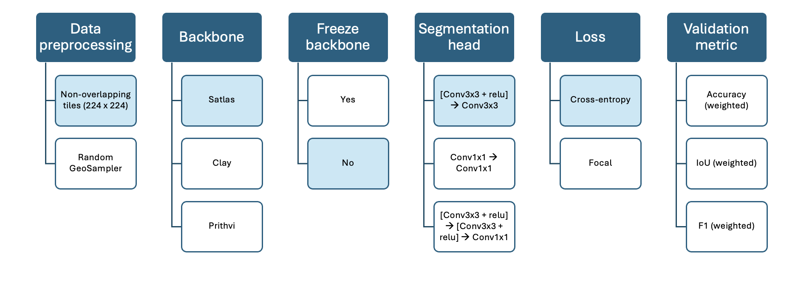
Model B: Clay
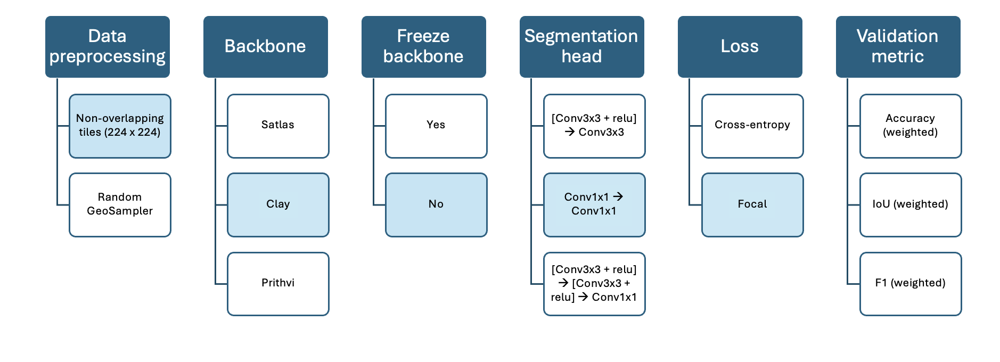
Model C: Prithvi
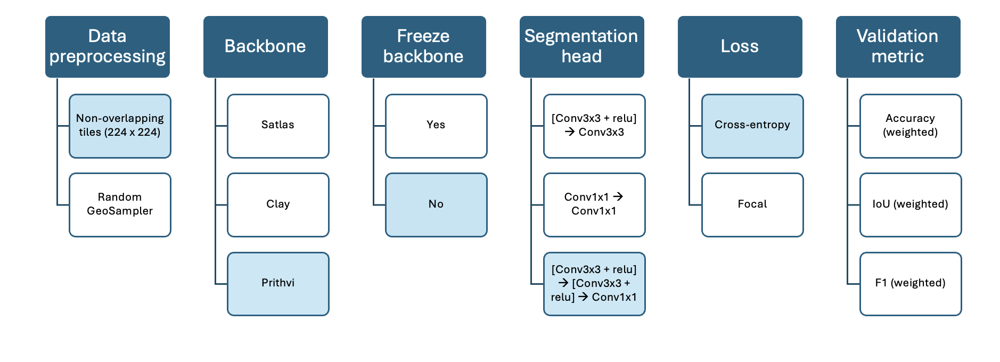
After fine-tuning each foundation model for 10 epochs, we observed the following performance metrics:
| Metric | Satlas | Clay | Prithvi |
|---|---|---|---|
| Weighted Accuracy | 0.57 | 0.72 | 0.62 |
| Weighted IoU | 0.33 | 0.58 | 0.41 |
| Weighted F1 | 0.41 | 0.69 | 0.58 |
| Training Time/Epoch | 9 mins | 8 mins | 20 mins |
| Parameters | 90M | 86M | 120M |
| Implementation Score | 5/10 | 6/10 | 7/10 |
The Clay model consistently outperformed other foundation models across all metrics, while also maintaining reasonable training times and computational requirements.
Loss Function Impact: The choice of loss function significantly influenced model performance. Focal loss proved particularly effective in handling class imbalance, especially when combined with the Clay model architecture.
Classification (Approach C)
Finally, in Approach C, we fine-tuned a geospatial foundation model for a classification task. We used the 56x56x3 image tiles as input.
For this approach we only used the Clay model as backbone, since it performed the best in the previous experiments.
The accuracy varied across the different classes as seen in the figure below:
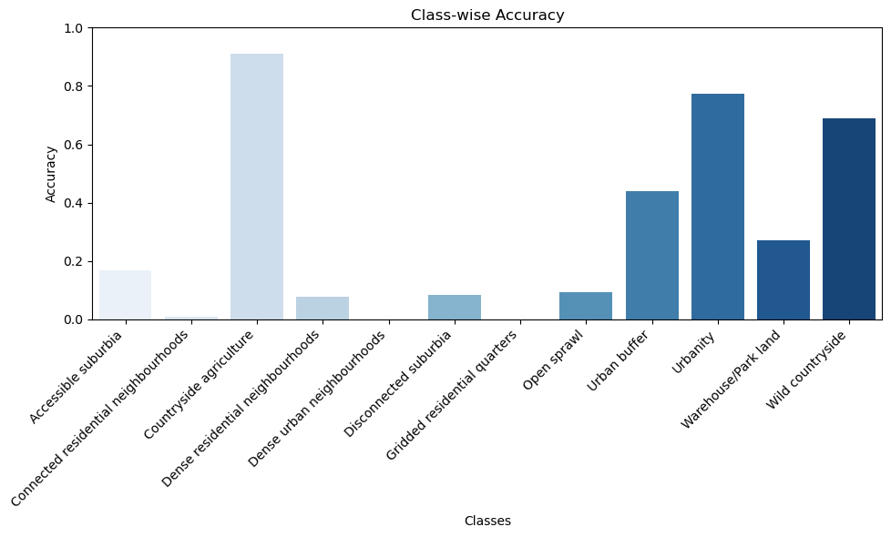
This figure shows a comparison between the predicted classes for the fine-tuned geospatial foundation model with segmentation approach (B) and the classification (C).
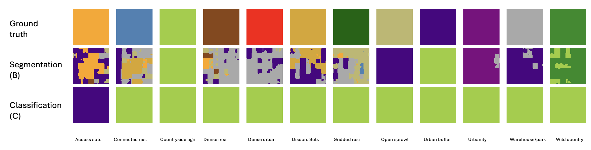
Evaluation Metrics
We employed multiple complementary metrics to evaluate model performance, as follows:
Intersection over Union (IoU): This metric measures the overlap between predicted and ground truth segmentations, ranging from 0 (no overlap) to 1 (perfect overlap). IoU is calculated as the area of intersection divided by the area of union between the predicted and actual segmentation masks.
Weighted F1 Score: This metric provides a balanced measure of precision and recall, particularly important for imbalanced datasets. It is calculated as the harmonic mean of precision (how many of the predicted positives are correct) and recall (how many of the actual positives were identified), weighted by class frequencies.
Weighted Accuracy: This metric calculates the proportion of correct predictions, weighted by class frequencies to account for class imbalance. It provides a more representative measure of model performance across all classes, regardless of their frequency in the dataset.
Preliminary results
Comparing the results is a non-trivial task because the image tiles do not correspond to each other and do not perfectly overlap (42px vs 224 px). To make a fair comparison we thus calculate the pixel-level accuracy scores across the approaches. For this purpose, we predict the full map of the test set and compare the overlapping tiles (as described in sampling). We then calculate the following metrics on a per-pixel level.
Overall model performance comparison (Pixel-level)
Our comprehensive evaluation revealed varying levels of performance across the three different approaches:
| Approach | Global Accuracy | Macro Accuracy | F1 Score | IoU |
|---|---|---|---|---|
| Classification (embeddings) | 0.76 (0.66) | 0.22 (0.13) | 0.23 | 0.63 |
| Classification + H3 level 5 | 0.87 (0.82) | 0.42 (0.35) | 0.45 | 0.79 |
| Classification + H3 ordinal | 0.80 (0.80) | 0.26 (0.26) | 0.26 | 0.69 |
| Classification (Clay) | 0.59 (0.68) | 0.09 | 0.12 | 0.38 |
| Segmentation (Clay) | 0.73 | 0.31 | 0.30 | 0.58 |
The baseline classification approaches demonstrated varying levels of success: - Basic embedding classification achieved 76% global accuracy (66% balanced) - Integration with H3 level 5 spatial indexing significantly improved performance to 87% global accuracy (42% balanced) - H3 level 5 ordinal classification reached 80% accuracy (26% balanced)
The fine-tuned geospatial foundation model performed better than the fine-tuned classification, with an accuracy score of 0.56 and 0.73 respectively.
Overall, the baseline approach with regional information performed best. This approach is not only the best performing but also relatively efficient to implement. Once the image embeddings are created, the downstream classification can be done in minutes.
Prediction example: London
The following figure shows an example of a prediction for the London area using the whole dataset. Each colour represents a different signature. The background colour represents the ground truth.
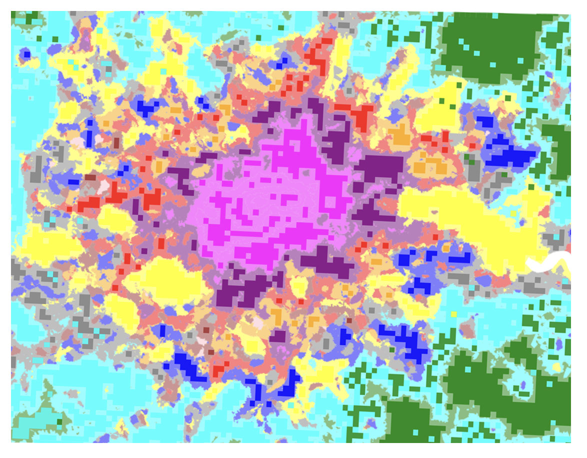
Final remarks and next steps
Footnotes
Bastani, F. et al., 2023. Satlaspretrain: A large-scale dataset for remote sensing image understanding. In Proceedings of the IEEE/CVF International Conference on Computer Vision, pp. 16772-16782.↩︎
Bastani, F. et al., 2023. Satlaspretrain: A large-scale dataset for remote sensing image understanding. In Proceedings of the IEEE/CVF International Conference on Computer Vision, pp. 16772-16782.↩︎
https://huggingface.co/made-with-clay/Clay↩︎
https://huggingface.co/ibm-nasa-geospatial/Prithvi-100M↩︎